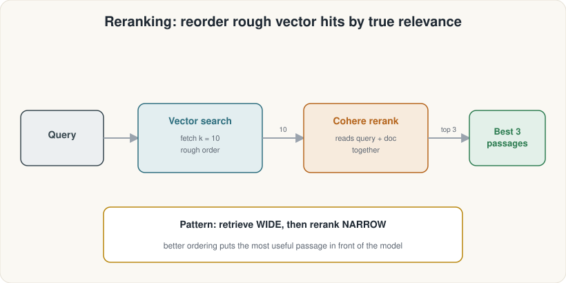
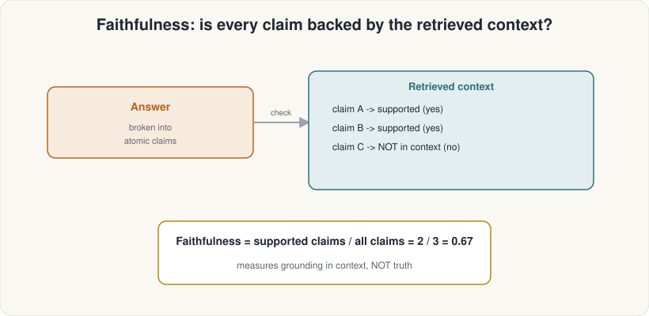
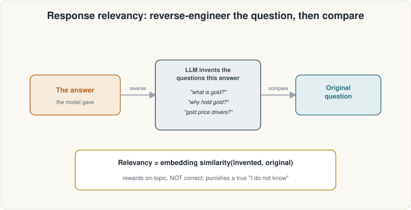
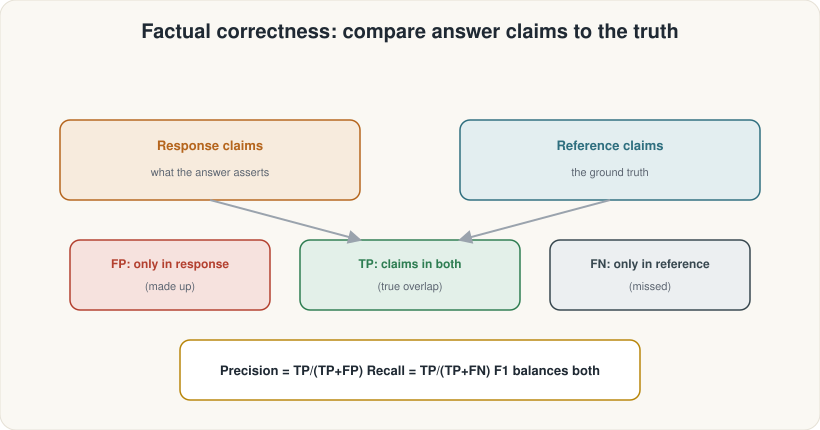
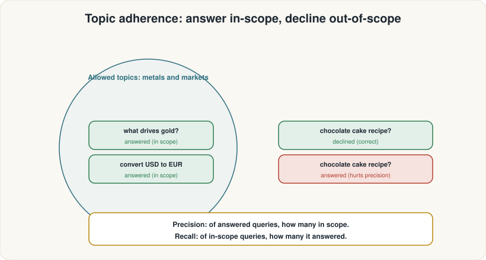
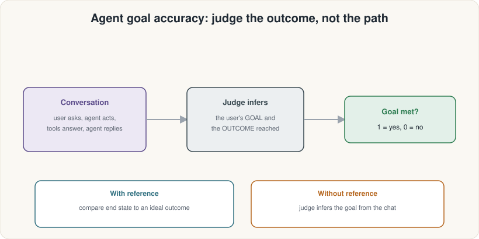
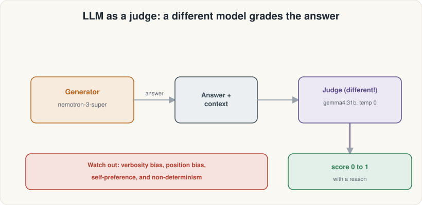
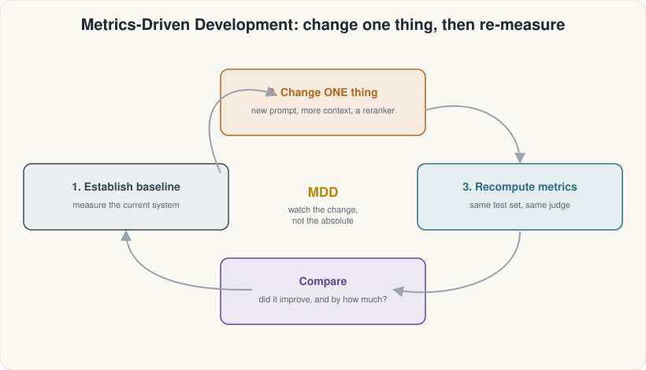

ASDRP · Agentic RAG Track · Module 12
Capstone: the Full Agentic RAG Evaluation System
Assemble every piece from Modules 1–11 into one working system — all 12 metrics, the MDD loop, and the hardest questions in the golden set.
What we'll cover
Contents
The Full Pipeline
- Agentic RAG architecture (all 8 stages)
- Cloud Ollama + Cohere reranking
- MetalDesk ReAct agent (3 tools)
- RAG answer function: retrieve → rerank → generate
The 12 Metrics
- Retriever tier (4): precision, recall, entities, noise
- Generator tier (3): faithfulness, relevancy, correctness
- Agent tier (5): topic, tool accuracy, tool F1, goal
- Multi-hop spotlight: the 2 hardest golden questions
MDD & Cautions
- Metrics-Driven Development loop
- Baseline vs. reranked comparison
- Goodhart's Law
- NoiseSensitivity inversion; judge biases
Track 1 — The Full Pipeline
The 8-stage Agentic RAG architecture
In Modules 1–11 you built each stage one at a time. Today you wire them all together.
- Corpus — 8 metals-domain markdown files (M4)
- Chunk — RecursiveCharacterTextSplitter 500/60 (M4)
- Embed — cloud Ollama qwen3-embedding:0.6b (M5)
- Vector store — Qdrant in-memory (M3/M5)
- Retrieve k=10 — wide candidate pull (M5)
- Cohere rerank → top_n=3 (M10)
- Generate — nemotron-3-super:cloud + RAG prompt (M5)
- Agent loop — LangGraph create_react_agent (M11)

Track 1 — The Full Pipeline
The rag_answer() function
def rag_answer(question, k=10, top_n=3,
use_rerank=True):
# Step 1: retrieve wide
candidates = [d.page_content for d in
vector_store.as_retriever(
search_kwargs={"k": k}
).invoke(question)]
# Step 2: rerank narrow (or slice)
if use_rerank:
contexts = [t for t, _ in
rerank(question, candidates, top_n)]
else:
contexts = candidates[:top_n]
# Step 3: generate from context
block = "\n\n".join(
f"[{i}] {c}"
for i, c in enumerate(contexts, 1))
response = chat_llm.invoke(
RAG_PROMPT.format_messages(
context=block,
question=question)).content.strip()
return {"response": response,
"retrieved_contexts": contexts}
k before blaming the reranker.
Track 1 — The Full Pipeline
The three MetalDesk tools (built in M11)
Live spot price from Metals.dev REST API. Billed per call.
Live currency conversion from Metals.dev rates endpoint.
Vector search + Cohere rerank over the 8-file knowledge base. Background knowledge only — NOT live prices.
agent = create_react_agent(
model=chat_llm,
tools=[get_metal_price, convert_currency, search_metal_knowledge],
prompt=SYSTEM_PROMPT)
result = agent.invoke({"messages": [{"role": "user", "content": question}]})Track 2 — The 12 Metrics
Retriever half vs. Generator half

Track 2 — Retriever Tier
Context Precision & Recall (M7)
Are the retrieved chunks relevant, and are the best ones ranked first?
Precision = quality & ranking of what you fetched
Did retrieval find everything the reference answer needed?
Recall = completeness

Track 2 — Retriever Tier
Entity Recall & Noise Sensitivity (M8)


Fraction of reference answer's named entities (places, numbers) present in retrieved context.
Fraction of claims in the answer that are wrong and traceable to retrieved noise. 0 is perfect. This metric is inverted — higher means worse.
Track 2 — Generator Tier
Faithfulness (M9)
Every claim in the answer is checked against the retrieved context. The score is the fraction of claims that are supported.

Track 2 — Generator Tier
Response Relevancy & Factual Correctness (M9)


Track 2 — Agent Tier
Topic Adherence (M11)
Checks whether the agent stays within its reference_topics. In-scope questions should be answered; out-of-scope should be declined.
scorer = TopicAdherenceScore(
llm=judge_llm, mode="f1")
score = await scorer.multi_turn_ascore(
MultiTurnSample(
user_input=convo,
reference_topics=[
"precious metals",
"metals markets",
"commodity prices"]))
Track 2 — Agent Tier
Tool-Call Accuracy vs. F1 (M11)
metal="Gold" ≠ metal="gold". Write reference calls to match the exact string the agent will produce.

Track 2 — Agent Tier
Agent Goal Accuracy (M11)
Grades the outcome, not the path. Binary: 1 for success, 0 for failure.

Track 2 — Judge Biases
LLM as a Judge (M9)
Almost all 12 metrics are scored by a second LLM acting as a grader. We use a different judge model (gemma4:31b-cloud) at temperature 0 — never let the generator grade its own work.
- Verbosity bias — prefers longer answers
- Position bias — side-by-side: favours the first option
- Self-preference — generator inflates its own score
- Non-determinism — same answer, different scores on re-runs
- JSON failures →
NaNin results table, easy to miss

Track 2 — Multi-Hop Spotlight
The 2 hardest golden questions
Six of the eight golden questions are single-hop (one corpus passage is enough). These two require synthesising two separate passages:
"Why might silver outperform gold in a strong economy but fall faster in a downturn?"
Requires: industrial-demand passage AND the silver-volatility passage
"For diversification with low counterparty risk, what are the trade-offs of physical bullion versus ETFs?"
Requires: physical-storage passage AND the portfolio-correlation passage
k and reranking helps, but multi-hop retrieval is an open research problem.
Track 3 — MDD & Cautions
Metrics-Driven Development (M6)
MDD is a development discipline, not a one-time grade:
- Establish a baseline (use_rerank=False)
- Change exactly one thing (turn on reranking)
- Recompute on the same test set
- Compare — attribute the change to the intervention

Track 3 — MDD
Baseline vs. Reranked — illustrative results
| Metric | Baseline (no rerank) | Improved (rerank) | Change |
|---|---|---|---|
| context_precision | 0.74 | 0.92 | +0.18 |
| context_recall | 0.69 | 0.84 | +0.15 |
| faithfulness | 0.83 | 0.89 | +0.06 |
| factual_correctness | 0.62 | 0.74 | +0.12 |
Track 3 — MDD
The MDD loop in code
def build_dataset(use_rerank: bool, k: int = 10,
top_n: int = 3) -> EvaluationDataset:
rows = [SingleTurnSample(
user_input=g["question"],
response=(o := rag_answer(g["question"], k=k,
top_n=top_n, use_rerank=use_rerank))["response"],
retrieved_contexts=o["retrieved_contexts"],
reference=g["reference"],
) for g in golden]
return EvaluationDataset(samples=rows)
mdd_metrics = [LLMContextPrecisionWithReference(),
LLMContextRecall(),
Faithfulness(),
FactualCorrectness()]
# baseline: vector search top-3 only
baseline = evaluate(build_dataset(use_rerank=False, top_n=3),
metrics=mdd_metrics,
llm=judge_llm,
embeddings=ragas_embeddings)
# improved: retrieve k=10, rerank to top-3
improved = evaluate(build_dataset(use_rerank=True, k=10, top_n=3),
metrics=mdd_metrics,
llm=judge_llm,
embeddings=ragas_embeddings)Track 3 — Cautions
Goodhart's Law — the most important caution
it stops being a good metric.
Track 3 — Cautions
⚠ Four more cautions to carry forward
Summary
The full 12-module arc, in one slide
Build the Pipeline
- M1: What is RAG?
- M2: Embeddings & meaning
- M3: Similarity search, Qdrant
- M4: Chunking, 8-file corpus
- M5: Cloud Ollama, first real RAG answer
Evaluate & Improve
- M6: MDD mindset, RAGAS setup
- M7: Precision & recall metrics
- M8: Entity recall & noise sensitivity
- M9: Generator metrics, LLM-as-judge
- M10: Cohere reranking, MDD lift
Agent & Capstone
- M11: ReAct agent, 5 agent metrics
- M12: All 12 metrics + MDD loop + Goodhart cautions
- Multi-hop spotlight
- Where to go from here